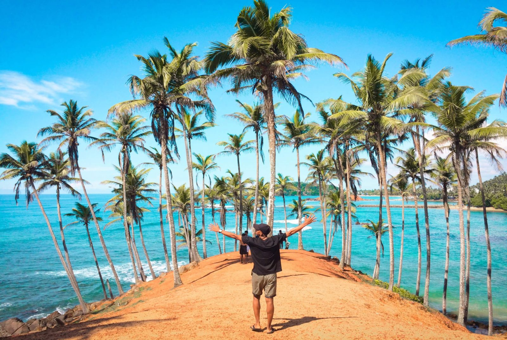

Province: Southern Province
District: Matara District
Area: 18 km²
Population: 76,193 (2024)
Main River: Nilwala River
Location: Southern Coast of Sri Lanka
Major Activities: Education, trade, fishing, tourism and services
Explore Matara
Matara, a peaceful town on the island's southern coast, offers a much calmer and more relaxed atmosphere compared to areas like Galle and Hikkaduwa, making it an ideal destination to experience Sri Lanka's tropical nature away from the crowds. Furthermore, like other towns along the southern coast, Matara is renowned for its diverse landscapes, varied cultures, and fascinating colonial-era monuments.🌱🌍
Why Matara Is Unique
|
 |
|
|
Province: Southern Province District: Matara District Area: 18 km² Population: 76,193 (2024) Main River: Nilwala River Location: Southern Coast of Sri Lanka Major Activities: Education, trade, fishing, tourism and services |